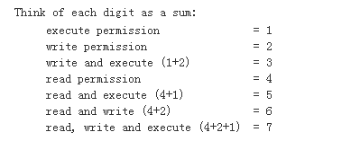

压缩与解压缩命令
bz和gz格式压缩
(tar -zcvf Tool.bak.20160119.tar.gz Tools)
tar -czvf ***.tar.gz
tar -cjvf ***.tar.bz2
bz和gz 解压缩
tar -xzvf ***.tar.gz
tar -xjvf ***.tar.bz2
tar -xvf archive.tar -C /tmp 将压缩包释放到 /tmp目录下
参数：
-c ：建立一个压缩档案的参数指令(create 的意思)；
-x ：解开一个压缩档案的参数指令！
-t ：查看 tarfile 里面的档案！
特别注意，在参数的下达中， c/x/t 仅能存在一个！不可同时存在！
因为不可能同时压缩与解压缩。
-z ：是否同时具有 gzip 的属性？亦即是否需要用 gzip 压缩？
-j ：是否同时具有 bzip2 的属性？亦即是否需要用 bzip2 压缩？
-v ：压缩的过程中显示档案！这个常用，但不建议用在背景执行过程！
-f ：使用档名，请留意，在 f 之后要立即接档名喔！不要再加参数！
-p ：使用原档案的原来属性（属性不会依据使用者而变）
-P ：可以使用绝对路径来压缩！
-N ：比后面接的日期(yyyy/mm/dd)还要新的才会被打包进新建的档案中！
--exclude FILE：在压缩的过程中，不要将 FILE 打包！
RAR 压缩与解压缩
make
make install
2）压缩命令
rar a etc.rar /etc
3）解压命令
rar x etc.rar
ZIP压缩和解压缩
zip -r file1 file2 dir1 -c >file1.zip 将几个文件和目录同时压缩成一个zip格式的压缩包
unzip file1.zip 解压一个zip格式压缩包
chomd
